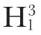
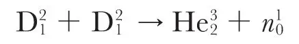
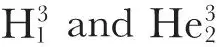

中文
中文M. L. Oliphant et al.
Editor’s Note
While American physicists were calling the recently discovered isotope of hydrogen “deuterium”, their British colleagues persisted with “diplogen”. Here Mark Oliphant and Paul Harteck, working with Rutherford in Cambridge, describe experiments that seem to involve the reaction of two diplogen nuclei (“diplons”). They substituted diplogen for hydrogen in ammonium compounds and bombarded them with low-energy diplogen. The researchers note that if two diplogen nuclei combine to form a helium nucleus, its atomic mass would be slightly greater than the known atomic mass of helium. So the resulting nucleus would be highly unstable and would immediately decay, throwing out protons and neutrons. Identifying the putative decay products (helium-3 and hydrogen-3, or tritium) awaited further experimental refinement. 中文
WE have been making some experiments in which diplons have been used to bombard preparations such as ammonium chloride (NH4Cl), ammonium sulphate ((NH4)2SO4) and orthophosphoric acid (H3PO4), in which the hydrogen has been displaced in large part by diplogen. When these D compounds are bombarded by an intense beam of protons, no large differences are observed between them and the ordinary hydrogen compounds. When, however, the ions of heavy hydrogen are used, there is an enormous emission of fast protons detectable even at energies of 20,000 volts. At 100,000 volts the effects are too large to be followed by our amplifier and oscillograph. The proton group has a definite range of 14.3 cm., corresponding to an energy of emission of 3 million volts. In addition to this, we have observed a short range group of singly charged particles of range about 1.6 cm., in number equal to that of the 14 cm. group. Other weak groups of particles are observed with the different preparations, but so far we have been unable to assign these definitely to primary reactions between diplons. 中文
In addition to the two proton groups, a large number of neutrons has been observed. The maximum energy of these neutrons appears to be about 3 million volts. Rough estimates of the number of neutrons produced suggest that the reaction which produces them is less frequent than that which produces the protons. 中文
While it is too early to draw definite conclusions, we are inclined to interpret the results in the following way. It seems to us suggestive that the diplon does not appear to be broken up by either α-particles or by proton bombardment for energies up to 300,000 volts. It therefore seems very unlikely that the diplon will break up merely in a much less energetic collision with another diplon. It seems more probable that the diplons unite to form a new helium nucleus of mass 4.0272 and 2 charges. This nucleus apparently finds it difficult to get rid of its large surplus energy above that of an ordinary He nucleus of mass 4.0022, but breaks up into two components. One possibility is that it breaks up according to the reaction
The proton in this case has the range of 14 cm. while the range of 1.6 cm. observed agrees well with that to be expected from momentum relations for an

particle. The mass of this new hydrogen isotope calculated from mass and energy changes is 3.0151. 中文
Another possible reaction is

leading to the production of a helium isotope of mass 3 and a neutron. In a previous paper we suggested that a helium isotope of mass 3 is produced as a result of the transmutation of Li6 under proton bombardment into two doubly charged particles. If this last reaction be correct, the mass of is 3.0165, and using this mass and Chadwick’s mass for the neutron, the energy of the neutron comes out to be about 3 million volts. From momentum relations the recoiling particle should have a range of about 5 mm. Owing to many disturbing factors, it is difficult to observe and record particles of such short range, but experiments are in progress to test whether such a group can be detected. While the nuclei of

appear to be stable for the short time required for their detection, the question of their permanence requires further consideration. 中文
(133, 413; 1934)
M. L. Oliphant, P. Harteck and Rutherford: Cavendish Laboratory, Cambridge, March 9.